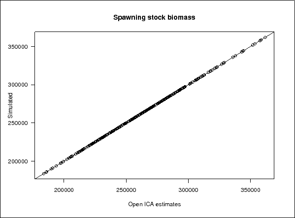

Next: Deterministic datasets, fitting surveys Up: Detailed tests results Previous: Detailed tests results
This dataset was developed to test ICA version 1.4 w (Kienzle and Simmonds, 2005): it estimated its paramaters with a precision inferior to 0.01%.
The tests were performed using 10 sets of data that simulated a fishery occuring between 1972 and 2002 (31 years). The total number of TSB, SSB and recruitment values estimated by OpenICAMINUIT and compared in the figures below were 310. To create the simulated dataset, recruitment values were resampled from the 2002 WGMHSA official ICA run which was a set of 29 recruitment values.
This set of data was used to check OpenICAMINUIT (ICA version 1.4x) estimates of Spawning Stock Biomass (SSB), Total Stock Biomass (TSB), recruitment and fishing mortality. The results are shown below.
|  |
 |
 |